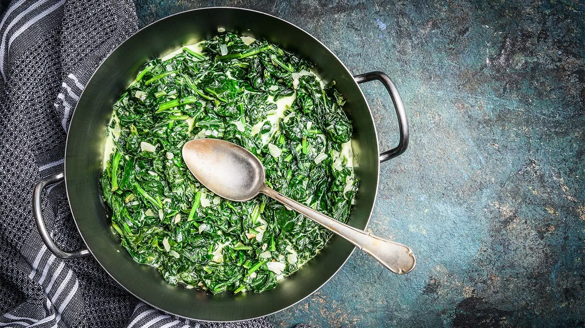

Tüyolar  Ispanak seçimlerinde küçük ve orta boylarda olması her zaman için yemeğin daha güzel ve lezzetli olmasını sağlar. Ispanakların iyice yıkayıp sirkeli suda bekletilmelidir. Topraklarından ve bakterilerin den arınması için. Ispanaklar söndükten sonra pirinçler ilave edilir. Tarifte su oranına dikkat edilmelidir. Kendi zevkinize göre ayarlayabilirsiniz elbette ama çok sulu olmamasına özen gösterilmeli. Tencerenin ağzı kapatılıp beklenirse ortalama 25 dk. kadar sonra ıspanak ve pirinçler pişmiş olacaktır. Ispanak yemeğimiz hazır. İster sıcak, ister ılık olarak tüketilebilir.